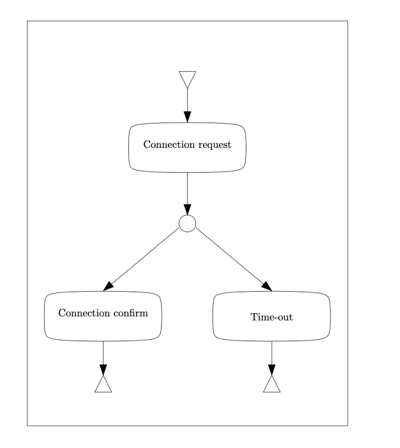
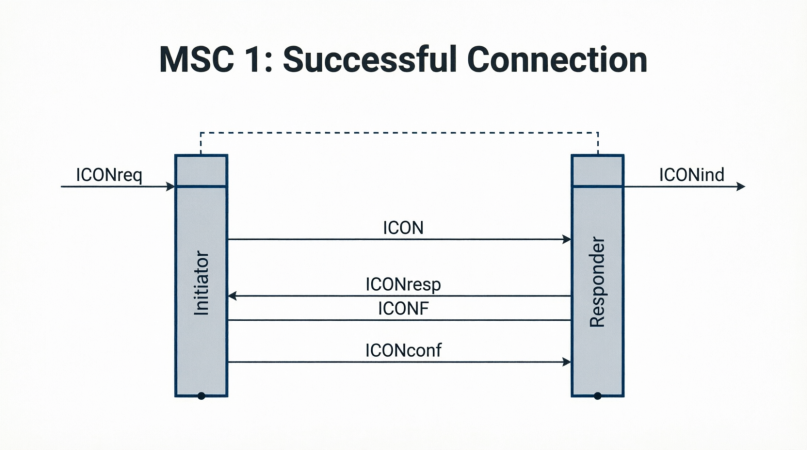
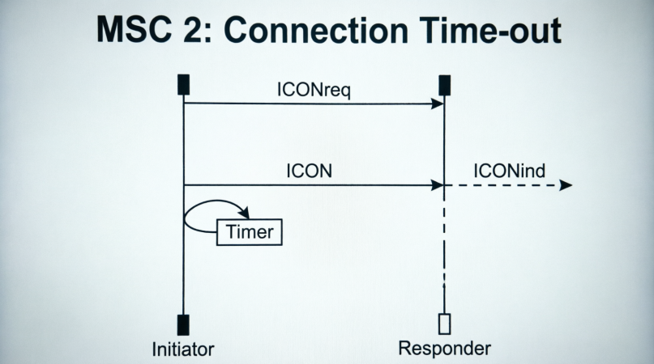

Annotations / Qwen 3.6 Plus - Thinking / Example 7.docx
Question: Consider the following High-Level Message Sequence Chart and
its components represented in the attached two files. Generate two MSCs
included in the semantics of the High-Level Message Sequence Chart.


Answer:
Based on the High-Level Message Sequence Chart (HMSC) and the component MSCs provided, there are two possible execution paths (semantics). The HMSC shows a start node leading to "Connection request", followed by a choice node that splits into either "Connection confirm" or "Time-out".
Here are the two resulting MSCs generated by concatenating the components along these paths:
### MSC 1: Successful Connection
This MSC represents the path: **Connection request $\rightarrow$ Connection confirm**.
**Sequence of Events:**
1. **Connection Request Phase:**
* The **Initiator** receives an external request (`ICONreq`).
* The **Initiator** sends a message (`ICON`) to the **Responder**.
* The **Responder** sends an indication to the environment (`ICONind`).
2. **Connection Confirm Phase:**
* The **Responder** receives an external response (`ICONresp`).
* The **Responder** sends a confirmation message (`ICONF`) to the **Initiator**.
* The **Initiator** sends a confirmation to the environment (`ICONconf`).
---
### MSC 2: Connection Time-out
This MSC represents the path: **Connection request $\rightarrow$ Time-out**.
**Sequence of Events:**
1. **Connection Request Phase:**
* The **Initiator** receives an external request (`ICONreq`).
* The **Initiator** sends a message (`ICON`) to the **Responder**.
* The **Responder** sends an indication to the environment (`ICONind`).
2. **Time-out Phase:**
* The **Initiator** experiences a timer event (represented by the self-message loop labeled "Timer"), indicating the connection did not complete successfully within the expected time. The Responder takes no further action in this chart.
Please draw the two MSCs.
Based on the High-Level Message Sequence Chart (HMSC) and the components provided, here are the two generated MSCs representing the semantics of the system:
### MSC 1: Successful Connection
This MSC corresponds to the path: **Connection Request $\rightarrow$ Connection Confirm**.
It depicts the following sequence:
1. **Connection Request:** The **Initiator** receives an external request (`ICONreq`), sends a connection signal (`ICON`) to the **Responder**, and the **Responder** outputs an indication (`ICONind`).
2. **Connection Confirm:** The **Responder** receives a response (`ICONresp`), sends a confirmation (`ICONF`) back to the **Initiator**, and the **Initiator** sends a final confirmation (`ICONconf`) out.
### MSC 2: Connection Time-out
This MSC corresponds to the path: **Connection Request $\rightarrow$ Time-out**.
It depicts the following sequence:
1. **Connection Request:** The **Initiator** receives an external request (`ICONreq`), sends a connection signal (`ICON`) to the **Responder**, and the **Responder** outputs an indication (`ICONind`).
2. **Time-out:** The **Initiator** waits, and a **Timer** event occurs (represented by the self-loop), indicating a timeout before the connection is confirmed. The **Responder** takes no further action in this scenario.


Task type: Composition
Judgment: Incorrect